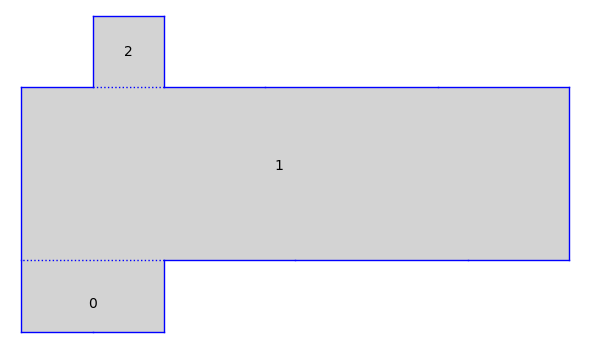

Exploring Orbit Closures¶
The file demonstrates how to use the flatsurf programs to compute the
GL(2,R)-orbit closure of a surface. This example was interesting to
P. Apisa and A. Wright.
Building the Surface and Orbit Closure¶
We consider the following half-translation surface
+---5---+
| |
4 4
| |
+ +---5---+---6---+---7---+---8---+
| |
3 3
| |
+ +---8---+---7---+---6---+
| |
2 2
| |
+---1---+---1---+
It belongs to \(Q_3(10, -1^2)\).
def apisa_wright_surface(h24, h3, l15, l6, l7, l8):
from flatsurf import ConvexPolygons, HalfTranslationSurface, Surface_list
params = [h24, h3, l15, l6, l7, l8]
K = Sequence(params).universe().fraction_field()
v24 = vector(K, (0, h24))
v3 = vector(K, (0, h3))
v15 = vector(K, (l15, 0))
v6 = vector(K, (l6, 0))
v7 = vector(K, (l7, 0))
v8 = vector(K, (l8, 0))
C = ConvexPolygons(K)
P0 = C(edges=[v15,v15,v24,-2*v15,-v24])
P1 = C(edges=[2*v15,v8,v7,v6,v3,-v8,-v7,-v6,-v15,-v15,-v3])
P2 = C(edges=[v15,v24,-v15,-v24])
S = Surface_list(base_ring = C.base_ring())
S.rename("ApisaWrightSurface({})".format(', '.join(map(str, params))))
S.add_polygons([P0, P1, P2])
# set_edge_pairing(poly_num1, edge_num1, poly_num2, edge_num2)
S.set_edge_pairing(0, 0, 0, 1)
S.set_edge_pairing(0, 2, 0, 4)
S.set_edge_pairing(0, 3, 1, 0)
S.set_edge_pairing(1, 1, 1, 5)
S.set_edge_pairing(1, 2, 1, 6)
S.set_edge_pairing(1, 3, 1, 7)
S.set_edge_pairing(1, 4, 1, 10)
S.set_edge_pairing(1, 8, 2, 2)
S.set_edge_pairing(1, 9, 2, 0)
S.set_edge_pairing(2, 1, 2, 3)
S.set_immutable()
return HalfTranslationSurface(S)
We use some simple parameters:
x = polygen(QQ)
K.<c> = NumberField(x^2 - 2, embedding=AA(2).sqrt())
S = apisa_wright_surface(1, 1+c, 1, c, 1+c, 2*c-1)
S.plot(edge_labels=False)

Now build the canonical double cover and orbit closure:
S.stratum()
Q_3(10, -1^2)
S.stratum().dimension()
7
U = S.minimal_cover("translation")
U.stratum()
H_6(5^2, 0^2)
Now build the orbit closure. The snippet below explores saddle connection up to
length 16 looking for cylinders. Each decomposition into cylinders and minimal
components provides a new tangent direction in the GL(2,R)-orbit closure of
the surface via A. Wright’s cylinder deformation.
from flatsurf import GL2ROrbitClosure # optional: pyflatsurf
U = S.minimal_cover('translation') # optional: pyflatsurf
O = GL2ROrbitClosure(U) # optional: pyflatsurf
O.dimension() # optional: pyflatsurf
2
The above dimension is just the current dimension. At initialization it only
consists of the GL(2,R)-direction.
old_dim = O.dimension() # optional: pyflatsurf
for i, dec in enumerate(O.decompositions(16, bfs=True)): # optional: pyflatsurf
O.update_tangent_space_from_flow_decomposition(dec)
new_dim = O.dimension()
if old_dim != new_dim:
holonomies = [cyl.circumferenceHolonomy() for cyl in dec.cylinders()]
areas = [cyl.area() for cyl in dec.cylinders()]
moduli = [(v.x()*v.x() + v.y()*v.y()) / area for v, area in zip(holonomies, areas)]
print("saddle connection number", i)
print("holonomy :", dec.u)
print("length :", (dec.u[0]**2 + dec.u[1]**2).n().sqrt())
print("num cylinders :", len(dec.cylinders()))
print("num minimal comps. :", len(dec.minimal_components()))
print("current dimension :", new_dim)
print("cyls. holonomies :", holonomies)
print("cyls. moduli :", moduli)
if new_dim == 7:
break
old_dim = new_dim
print('-' * 30)
saddle connection number 0
holonomy : (0, 1)
length : 1.00000000000000
num cylinders : 2
num minimal comps. : 2
current dimension : 3
cyls. holonomies : [(0, (2*c+5 ~ 7.8284271)), (0, (2*c+5 ~ 7.8284271))]
cyls. moduli : [(c+5/2 ~ 3.9142136), (c+5/2 ~ 3.9142136)]
------------------------------
saddle connection number 1
holonomy : (1, 0)
length : 1.00000000000000
num cylinders : 6
num minimal comps. : 0
current dimension : 4
cyls. holonomies : [(1, 0), (2, 0), (1, 0), ((4*c+2 ~ 7.6568542), 0), (2, 0), ((4*c+2 ~ 7.6568542), 0)]
cyls. moduli : [(1/2 ~ 0.50000000), 1, (1/2 ~ 0.50000000), (-c+3 ~ 1.5857864), 1, (-c+3 ~ 1.5857864)]
------------------------------
saddle connection number 3
holonomy : (-1, -1)
length : 1.41421356237310
num cylinders : 2
num minimal comps. : 2
current dimension : 5
cyls. holonomies : [((-3*c-3 ~ -7.2426407), (-3*c-3 ~ -7.2426407)), ((-3*c-3 ~ -7.2426407), (-3*c-3 ~ -7.2426407))]
cyls. moduli : [(6*c+9 ~ 17.485281), (6*c+9 ~ 17.485281)]
------------------------------
saddle connection number 10
holonomy : (-3, -1)
length : 3.16227766016838
num cylinders : 2
num minimal comps. : 1
current dimension : 6
cyls. holonomies : [((-3*c-3 ~ -7.2426407), (-c-1 ~ -2.4142136)), ((-3*c-3 ~ -7.2426407), (-c-1 ~ -2.4142136))]
cyls. moduli : [5, 5]
------------------------------
saddle connection number 88
holonomy : (-6*c + 1, 5*c + 7)
length : 15.9381425083866
num cylinders : 2
num minimal comps. : 1
current dimension : 7
cyls. holonomies : [((-284*c ~ -401.63665), (268*c+376 ~ 755.00923)), ((-284*c ~ -401.63665), (268*c+376 ~ 755.00923))]
cyls. moduli : [(23940*c+33952 ~ 67808.273), (23940*c+33952 ~ 67808.273)]